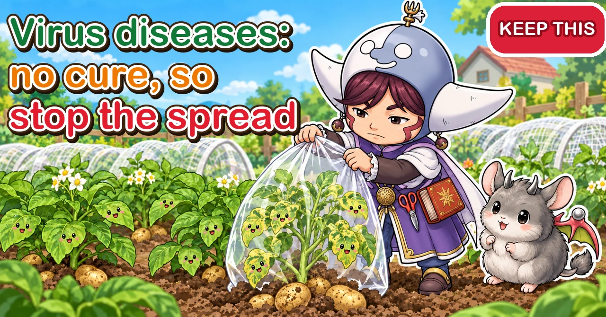

Virus diseases 🧤 No cure — so stop them spreading

🧤 "My potato leaves have gone mottled dark and pale green, and now they're crinkling."
🧤 "The new cucumber leaves are blotchy yellow, and the fruit is misshapen."
🧤 "The top leaves of my tomato turned yellow and curled, and it stopped growing."
Hello, I'm Eiko. Eight years of growing vegetables organically and without pesticides, and a teaching licence in science.
Mottled and crinkling potato leaves in spring; new cucumber leaves blotched with yellow and fruit going lumpy in summer; tomato tips yellowing, curling and stalling. Symptoms like these may be caused by a virus.
Unlike fungal and bacterial diseases, a virus disease can't be cured once it shows. That makes it even more important to understand how viruses spread and to stop them in advance. This article covers recognising virus diseases, the routes they take, warnings crop by crop, prevention, and how to clear up when one appears.
Looks like: a mottle of dark and light green (or yellow) on new leaves — the "mosaic"; new leaves narrow, crinkled, curled or small; a plant that stops growing and stays squat; misshapen fruit with bumps or blotches; sometimes rings or brown spots on leaves.
Where you are: the same viruses and carriers turn up worldwide. Cucumber mosaic and potato viruses are carried by aphids almost everywhere; tomato yellow leaf curl, spread by whitefly, is a problem in warm regions such as the southern United States and the Mediterranean. In Britain, North America and elsewhere, buy certified seed potatoes rather than replanting your own.
What to do: cover plants with insect netting the day you plant; use reflective silver mulch; clear weeds round the plot; buy certified seed potatoes and healthy plants; keep hands and secateurs clean; bag and pull infected plants early and take them off the plot.

What this diagram says （図解の文字）
- No cure — so block the routes it travels
- "Symptoms": "Mottling on new leaves (mosaic)" ／ "Crinkling and curling" ／ "Misshapen fruit"
- "How it spreads": "Aphids" ／ "Whitefly" ／ "Sap on hands and secateurs" ／ "Seed potatoes and plants" ／ "Weeds"
- "Once a plant is infected, there's no way to cure it"
① The quick version
Symptoms
- A mottle of dark and light green (or yellow) on leaves — the mosaic
- New leaves become narrow, crinkled, curled or small
- The plant stops growing and stays squat
- Fruit is misshapen, bumpy or blotchy
- Sometimes rings or brown spots on leaves
How it spreads
- Aphids: cucumbers, melons, peppers, broad beans, potatoes, strawberries and many more
- Whitefly: tomato yellow leaf curl and others
- Thrips: some viruses of tomatoes and peppers
- Hands and secateurs: touching healthy plants with sap from a sick one
- Seed potatoes, seed and plants: infected from the start
What to do
- Keep insects off with netting or reflective silver as soon as you plant
- Clear weeds round the plot (home to both insects and viruses)
- Use certified seed potatoes and healthy plants
- Keep hands and secateurs clean; wash after touching a suspect plant
- Pull plants with symptoms early and take them off the plot
② What a virus disease is
Not like fungal or bacterial diseases
Most vegetable diseases are caused by fungi or bacteria: powdery and downy mildew are fungi, soft rot is bacterial. Virus diseases are caused by viruses, far smaller than fungi or bacteria, that get inside the plant's cells and multiply there.
No cure
A virus multiplies inside plant cells using the plant's own machinery. Once in, it spreads through the whole plant and there's no way to remove it. Sprays used for fungal and bacterial diseases do nothing against viruses. So the whole strategy is: don't let plants get infected, and don't let an infected plant pass it on.
Same symptoms, many viruses
"Mosaic" is a catch-all name for mottled leaves, and the virus behind it varies with the crop. Some viruses infect many vegetables; others only one. In a home garden you don't need to identify the exact virus. "Mottling and crinkling — suspect a virus and stop it spreading" is enough.
When they spread most
Virus diseases spread most when their carriers are busy:
- Aphids: spring and autumn
- Whitefly: warm weather, especially summer into autumn
- Thrips: spring to autumn
Protect plants that are young during these times especially carefully.
③ Recognising the symptoms
They show on new leaves
Virus symptoms usually show most clearly on the new leaves at the growing tip.
- Dark and light green mottling on new leaves
- New leaves narrow, small and crinkled
- Leaf edges rolling, leaves cupping
- The tip bunching up and no longer extending
Yellowing that starts on old lower leaves usually has another cause, such as lack of food or root damage.
Telling it from look-alikes
- Hungry plants: paling starts on old lower leaves and spreads; usually not mottled
- Cold: winter leaves go purplish or tips scorch; recovers as it warms
- Aphid or mite damage: insects under the leaves; new leaves may crinkle, so check for insects
- Virus: mottling and crinkling keep appearing on new leaves, and the plant stalls
If in doubt, compare with the new leaves of a healthy plant in the same bed. If one plant's new leaves look wrong and it gets worse day by day, suspect a virus.
On the fruit
- Cucumbers: misshapen fruit, bumpy or mottled skin
- Tomatoes: fewer, smaller fruit
- Peppers: mottled or bumpy fruit
- Melons and watermelons: patterns or distortion on the skin
Potato scab is something else
Brown, corky, scab-like patches on potato skins are common scab, caused not by a virus but by bacteria-like organisms in the soil, and worse in alkaline soil. It has a different cause and cure from leaf mosaic, so treat them separately.
How to check
- Look mainly at newly opened leaves at the tips
- Compare with the new leaves of healthy plants in the same bed
- If you see mottling, check under the leaves for aphids or whitefly
- Mark a suspect plant and look again in a few days; if it's worse, a virus is likely
From one look, a virus can be hard to tell from hunger or cold. Waiting a few days to see whether new leaves show the same thing is the sure way.
④ How viruses spread
1. Aphids
Aphids are the classic carriers. An aphid that feeds on an infected plant then moves to a healthy one, and the virus goes with it. Some aphid-borne viruses pass on after the briefest feed, so "deal with aphids once they arrive" can be too late. The key is to stop them landing at all. For dealing with aphids themselves, see the aphid article.
2. Whitefly
Tomato yellow leaf curl is spread by a tiny white insect, the silverleaf (tobacco) whitefly. New leaves at the tip turn yellow, roll inward from the edges and crinkle, and the plant stops growing. Whitefly are so small they get through ordinary insect netting; commercial growers under cover are advised to use mesh of 0.4 mm or finer.
3. Thrips
Thrips can also carry viruses to tomatoes, peppers and others. They're tiny, slender insects that live inside flowers and under leaves.
4. Hands and secateurs
Some viruses spread when hands or secateurs carrying sap from an infected plant touch another plant. Pinch out side shoots, prune or harvest an infected plant, then go straight on to a healthy one with the same blades, and you can pass it on.
5. Seed potatoes, seed and plants
If a seed potato carries a virus, the plant that grows from it is infected from the start. Seed and bought plants can carry viruses too.
6. Weeds
Some weeds round the plot carry viruses themselves or shelter the insects that carry them. Insects fly from the weeds to your vegetables and bring the virus with them.

What this diagram says （図解の文字）
- Crop by crop: the insects and routes to watch
- "Potatoes: certified seed potatoes" ／ "Tomatoes: yellow leaf curl comes from whitefly"
- "Cucumbers and melons: aphids" ／ "Broad beans: pinch out the tips"
- "Strawberries: take runners from healthy parent plants" ／ "Autumn leafy greens: net them as soon as you plant"
- "Potato scab isn't a virus"
⑤ Crop by crop
Potatoes
Potatoes get mosaic very easily. As aphids build up from mid-spring, mottling appears on the leaves; as it progresses they crinkle, yellow, develop dark spots and die back.
- Use certified seed potatoes from a reliable supplier
- When buying, check for rot or softness, and that each has several eyes
- Replanting supermarket potatoes or your own harvest year after year lets viruses build up
- Don't overfeed (soft plants attract aphids)
- Brush aphids off early
- Pull plants with mosaic early
In one trial, all the leaves were cut off a mosaic-infected plant and it was left to regrow: the new leaves looked healthy, but the tubers didn't size up. If it appears, don't panic — lifting what's there at that point is often best.
When you harvest, leave no tubers in the ground, however small. Leftovers sprout next year and can start the virus off again.
Tips for planting and checking potatoes
- Inspect seed potatoes before planting: no rot, no softness on cut faces or skin
- When shoots appear, thin them to open up the base
- From mid-spring, as aphids increase, check under leaves and at the tips
- Some people remove the first one or two mottled leaves and watch; but a plant with advanced symptoms won't recover
- If symptoms appear close to harvest, the tubers are already well grown and you can grow on to harvest
- Pull plants that show symptoms soon after emerging
Even if mosaic appears, you'll still harvest from the rest if it doesn't spread. Protecting the uninfected plants protects your crop.
Tomatoes
- Yellow leaf curl (whitefly): tip leaves yellow, roll and crinkle; growth stops
- Mosaic (aphids, hands): mottled, crinkled leaves
Whitefly breed on weeds too, so clear weeds round the plot. Varieties sold as resistant may still be infected without showing it and act as a source for others, so keep up whitefly control regardless.
Cucumbers, melons, watermelons and squash
Aphid-borne viruses are common here. Mottled, crinkled leaves and misshapen, mottled fruit are the signs. Netting the young plants and reflective silver to deter aphids are what count.
Courgettes
Some courgette varieties naturally have silvery markings along the leaf veins. That's not disease. A virus shows as crinkled new leaves and bumpy or mottled fruit.
Peppers and aubergines
Viruses carried by aphids or thrips can appear. Watch for mottled leaves and mottled or bumpy fruit.
Broad beans and peas
Broad beans attract aphids heavily and get mosaic readily. Aphids cluster at the stem tips, so pinch out the tips — it doubles as stopping the plant — to cut aphid numbers.
Okra, bitter gourd and others
These can also get viruses carried by aphids or whitefly. Watch new leaves for mottling and crinkling, and net the young plants.
Strawberries
Strawberries can get aphid-borne viruses too. If you raise new plants from runners and the parent carries a virus, so will the young plants. Take runners only from healthy parents.
Chinese cabbage, radishes, komatsuna and other brassicas
The cabbage family can get aphid-borne mosaic too. Autumn is an aphid peak, so net them as soon as you sow or plant.
- Put up an insect-net tunnel straight after sowing
- Don't overdo fertiliser, especially nitrogen (it enriches the sap and aphids multiply)
- Check the undersides of leaves and the young leaves at the heart
⑥ Prevention
1. Keep insects off
- Cover with insect netting or fleece as soon as you plant; use finer mesh if you need to stop whitefly
- Use silver mulch or reflective tape to reduce aphids landing
- Hang a yellow sticky card to see how many insects are flying in
- Check under the leaves of plants before planting and only plant clean ones
2. Clear the weeds
Weeds round the plot shelter virus-carrying insects and may carry viruses themselves. Cut weeds round the beds and at the plot edges regularly. Pull self-sown "volunteer" tomatoes from last year too.
3. Clean hands and secateurs
- Work on healthy plants first, suspect ones last
- After touching a suspect plant, wash your hands with soap before touching others
- Wipe secateurs between plants; wash and disinfect blades used on infected plants
- Pinch out side shoots by hand instead of with secateurs (and wash your hands)
It's sometimes said that smokers should wash their hands well before handling tomatoes or peppers, as a virus in tobacco can be carried on the hands.
4. Start clean
- Use certified seed potatoes
- Choose plants with good colour and no mottling or crinkling
- Save seed, or propagate, only from healthy, disease-free plants
5. Don't overfeed
Too much fertiliser, especially nitrogen, makes plants soft and lush and draws aphids and other insects. Stick to the recommended amounts.
6. Prune and pinch on sunny days
Pinch out tomato side shoots and train cucumbers on sunny mornings, when cuts dry fast and disease gets in less easily. Avoid working on wet plants or in rain, when sap spreads more.
7. Protecting young plants matters most
The younger a plant when infected, the worse the damage. Infected as a seedling, it may barely grow at all; infected once it's big and fruiting, it will still give some harvest.
- Keep plants covered for the first month or so after planting
- Watch for insects where you raise seedlings, too
- Don't plant out any seedling with even slight mottling or crinkling
8. Let natural enemies help
Ladybirds, hoverflies and spiders eat aphids and thrips. Spraying strong chemicals everywhere kills these too. Relying on netting and brushing insects off makes a plot where natural enemies can work.

What this diagram says （図解の文字）
- Five rules of prevention, and clearing up when it appears
- "Prevention": "1. Net the day you plant" ／ "2. Pull infected plants early" ／ "3. Work on healthy plants first; wipe secateurs between plants" ／ "4. Certified seed potatoes" ／ "5. Cut the weeds around the plot"
- "If it appears": "Off the plot, bag and all" ／ "Don't leave even small tubers" ／ "Wash your hands"
- "Sprays don't work. Close the routes one by one"
⑦ Choosing plants
Plants can already be infected when you buy them. Check that:
- New leaves show no mottling or crinkling
- Leaf colour is even across the plant
- The tip is growing out, not bunched up
- There are no aphids, whitefly or thrips under the leaves
- Other plants on the same bench don't show symptoms
Between bringing them home and planting, keep insects off: plant soon and cover with netting.
⑧ Handling secateurs and hands
Order of work
Work through healthy plants first and leave suspect ones until last. Touch a suspect plant first and you may carry it to healthy ones on your hands or blades.
Looking after secateurs
- Wipe the blades with a cloth between plants as you work
- After use on an infected plant, wash off the sap thoroughly
- Wiping with household disinfecting alcohol is another step (it doesn't work on every virus, so washing and using separate tools come first)
- Keeping one pair just for suspect plants is a good idea
Hands
- Wash with soap straight after touching a suspect plant
- If you wear gloves, change or wash them
- Don't go plant to plant pinching out tomato side shoots without washing your hands
⑨ When it appears
Pull it early
An infected plant won't recover. Left in place, insects feed on it and keep carrying the virus to others. It's a shame, but pulling it early is the best thing you can do.
- Before pulling, put a bag over the plant so aphids and whitefly don't scatter
- Pull it, roots and all, with the bag still on
- Tie the bag and take it off the plot
- Wash your hands and tools afterwards
- Check nearby plants for insects and symptoms
If harvest is close
With potatoes and other crops near harvest, you can lift them there and then. With cucumbers and other crops that keep cropping, you can keep picking while symptoms are mild — but remember the plant is a source of infection, and watch the others closely.
Is the produce safe to eat?
Fruit and tubers from infected plants are safe to eat, though they may be misshapen or less tasty. But never use tubers from an infected plant as next year's seed potatoes.
Disposing of infected plants
Don't pile infected plants in a corner or put them on the compost heap. Bag them, tie the bag and dispose of them according to local rules. You can also leave the bag in the sun until the contents die off, then dispose of it.
After clearing
- Leave no infected debris on the plot, and keep it off the compost heap
- With potatoes, leave no small tubers in the soil
- Solarising the soil in summer is an option where disease appeared
- Next year, don't plant the same crop in the same spot
⑩ Countermeasures by route
- Aphids: net at planting, silver mulch, light feeding, brush off any you see
- Whitefly: fine mesh, yellow sticky cards, pull weeds and volunteer tomatoes
- Thrips: clear weeds, check flowers and under leaves
- Hands and secateurs: healthy plants first, wipe blades between plants, wash after touching a suspect plant
- Seed potatoes, seed, plants: certified seed potatoes, plants without mottling or crinkling, seed from healthy plants
- Weeds and debris: cut weeds round the plot; leave no infected plants or debris
Block one route and the virus may come by another. The approach is to combine what you can and steadily cut the chances of infection.
⑪ Keeping it manageable
Doing everything perfectly can feel overwhelming. Decide your priorities and it's easier to keep going.
- Net plants the day you plant them (works best)
- Pull plants with symptoms promptly, without hesitating (stops spread)
- Work on healthy plants first and wipe secateurs between plants (no spreading by hand)
- Use certified seed potatoes (don't bring it in)
- Cut weeds round the plot (fewer insect homes)
Just keeping up these five makes a big difference to how often virus diseases appear.
⑫ Through the year (central Japan)
- February–March: buy seed potatoes from a reliable supplier; tidy weeds round the plot
- April–June: aphids build up. Net at planting; check potatoes, broad beans and strawberries
- June–August: check new leaves of tomatoes, cucumbers and peppers; watch for whitefly; keep weeds down
- September–November: autumn aphid peak. Net autumn and winter crops at planting
- When clearing: infected plants and debris off the plot; leave no potato tubers
⑬ Keeping records
When a virus disease appears, note:
- Which crop, which plant, and when
- Whether aphids or whitefly were numerous then
- Where the seed potatoes or plants came from
- Whether they were netted, and when
If it appears at the same time every year, tighten your defences just before. If it keeps appearing in seed potatoes or plants from one shop, consider buying elsewhere.
⑭ Where growers disagree, and common mistakes
Keep mildly affected plants? One view: pull at once. Another: if harvest is near or you have few plants, keep picking while symptoms are mild. In a small garden it's a hard call, but if there are healthy plants of the same family nearby, pulling early to remove the source is safer.
Is a resistant variety safe? Resistant varieties show fewer symptoms when infected, but may still carry the virus and pass it on. Keep up insect control even with resistant varieties.
Does removing leaves help a plant recover? Some say removing the first mottled potato leaves lets new shoots grow back healthy. But in one trial where all diseased leaves were cut off, the regrowth looked fine yet the tubers didn't grow. The virus is still inside, so a plant that looks better isn't cured. Think of removing early leaves as reducing spread to other plants.
Does it spread through soil? Most virus diseases travel by insects, hands and seed potatoes; few spread from the soil itself. But tubers, roots and weeds left in the soil can carry it to next year. That's why clearing debris matters.
Common mistakes:
- Replanting your own potatoes every year — viruses build up. Use certified seed potatoes
- Pinching out with secateurs used on a sick plant — sap on the blades spreads it. Healthy plants first; wipe between plants
- Keeping a mottled plant out of thrift — insects carry the virus on from it. Pull it early
- Netting after aphids arrive — may be too late. Net at planting
- Feeding to perk it up — fertiliser doesn't cure viruses, and soft growth draws insects
⑮ Questions people ask
Can I use tubers from an infected potato as seed next year? No. They carry the virus, and so will the plants they grow. Even tubers from healthy-looking plants can build up viruses unnoticed if you replant your own year after year. Buying certified seed potatoes each year is the safe choice.
Can I grow the same crop where a virus appeared? Most viruses don't survive long in soil, but leftover tubers, roots and weeds can start it again. Clear the debris, and if you can, grow that family somewhere else.
I've found a mottled leaf. What first?
- Mark the plant
- Check under the leaves for aphids or whitefly; brush off any you find
- Compare with new leaves on healthy plants in the same bed
- Wash hands and secateurs before touching other plants
- Look again in a few days; if new leaves show the same, bag the plant and pull it
Can plant viruses infect people? No. Eating produce from infected plants is safe.
Only one plant is mottled. Should I pull the others too? No need. Pull the one with symptoms, and watch the new leaves of the plants around it, and for insects, closely for a while.
My tomato's leaves are yellow, crinkled and curled. If new tip leaves are yellowing, rolling inward from the edges and crinkling, and the plant has stopped growing, it may be yellow leaf curl, spread by whitefly. Shake the leaves: if tiny white insects fly up, whitefly are present. Bag the plant to trap them, then pull it and take it off the plot.
My cucumbers are misshapen and bumpy. Lack of food or water can misshape cucumbers, but if the skin is bumpy or mottled and new leaves are mottled too, suspect a virus.
Is there a spray to cure it? No. Products on sale are for reducing the insects that carry viruses.
The same crop gets a virus every year. There may be infected weeds or insect habitat nearby. Net young plants earlier and for longer, clear weeds round the plot, and try buying seed potatoes or plants elsewhere. Resistant varieties are another option.
Is produce grown near an infected plant all right? Nearby plants won't necessarily catch it at once. After pulling the infected plant, watch new leaves on the same family nearby for a while, and brush off aphids or whitefly early.
Can I use seed I saved myself? Yes, from plants that stayed healthy. Don't save seed from infected or suspect plants — some viruses travel in seed.
Does it happen in containers? Yes — aphids and whitefly fly to balconies too. Net young plants and pull infected ones early. Remove the roots of infected plants before reusing the compost.
Science bit: six whys 🔬
Why can't a virus multiply on its own? A virus is a tiny particle with no cells of its own. It can't reproduce alone; it has to get inside a living cell and borrow that cell's machinery. A plant virus gets into plant cells and makes them build virus parts using the same machinery the plant uses to build itself. The new viruses then travel through the plant's internal transport and spread through the whole plant.
Why are weeds a source? Some viruses can infect weeds as well as vegetables. In a weed, the virus survives the winter; in spring, insects feed on the weed and carry it to your vegetables. Weeds are winter quarters for both virus and insect. Clearing weeds round the plot cuts off the starting point.
Why the mottled pattern? Where the virus multiplies, the chloroplasts that make leaves green stop working properly and the colour fades. Areas with more and less virus form a patchwork, giving the dark and light mosaic — hence the name. Symptoms are strongest on new leaves probably because the virus is carried to, and collects in, the fast-growing young parts.
Why is whitefly hard to stop? Whitefly are only about 1 mm long. The ordinary netting used in home gardens, around 1 mm mesh, lets them through. They gather under leaves and fly up all at once when disturbed, so they're hard to catch by hand. And they breed on weeds, so more keep arriving. That's why weed control and fine mesh matter so much against whitefly-borne viruses.
Why do seed potatoes carry it? Potatoes are grown not from seed but from tubers, which are part of the parent plant. If the parent carries a virus, so does the tuber, and the plant that grows from it is infected from birth. Certified seed potatoes are grown and checked to be virus-free, which is why they're safe to use.
Why can it pass on so fast? Some aphid-borne viruses ride on the tip of the aphid's mouthparts. When an aphid lands on a plant, it first probes briefly to "taste" the sap. In that brief taste, virus on the mouthparts passes into the new plant. It happens before any insecticide could act — which is why stopping them landing, with netting and reflective mulch, matters most.
To sum up
- ✅ Virus diseases can't be cured once they appear. The whole game is not infecting and not spreading
- ✅ Signs: mottling on new leaves, crinkling, and a plant that stops growing
- ✅ Routes: aphids, whitefly, thrips, hands and secateurs, seed potatoes, seed and plants, weeds
- ✅ Net the day you plant, use reflective silver and clear weeds to keep insects off
- ✅ Work on healthy plants first; wipe secateurs between plants; wash after touching a sick one
- ✅ Use certified seed potatoes; don't replant your own year after year
- ✅ Bag plants with symptoms, pull them, and take them off the plot
- ✅ When buying plants, check new leaves for mottling and crinkling, and under the leaves for insects
- ✅ When clearing, leave no debris or small tubers
- ✅ Potato scab is a different disease, not a virus
- ✅ Guard young plants hardest when insects are busy (aphids in spring and autumn, whitefly summer into autumn)
Virus diseases can't be cured, but the ways to prevent them are clear. Closing the routes one by one protects your whole plot. Start next time you plant: net the plants that very day, and keep one cloth in your pocket to wipe your secateurs between plants as you work 🧤
Thank you for reading!